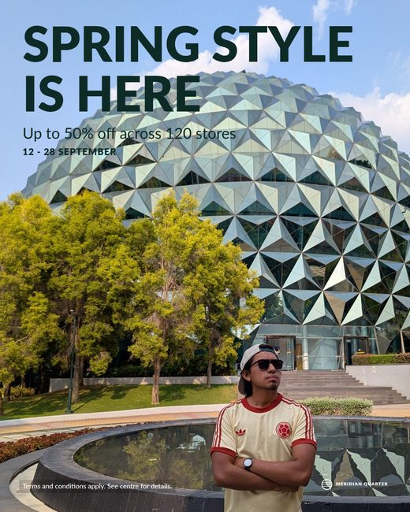
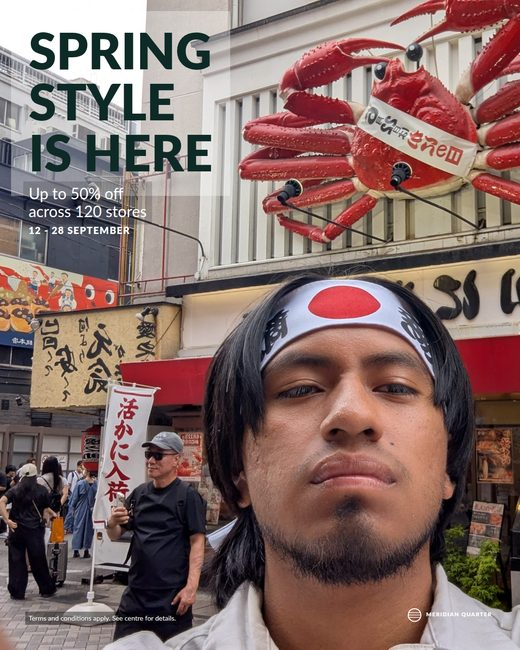

A retail property campaign goes out to several centres, and each centre needs its own package. If the rollout delivers one single document with everything inside it, somebody has to pull each centre's share out by hand before it can be sent.
What was verified of the template mechanism: 1,340 assets land on a single Figma page, grouped by vendor inside that one document [screenshot of the product running]. Grouping is not separating. Here each centre is a self-contained folder: it opens, it zips and it ships on its own.
Instagram 4:5 · 1080×1350 — one per centre, each in its own folder. Same master structure, same copy, its own photograph and its own resolved layout.


| Centre | Files | Total | Largest | Validator |
|---|---|---|---|---|
| Meridian Quarterphoto.jpg | 15 | 7.8 MB | 2.20 MB | verde |
| Harbourside PlazaPXL_20260411_004955053.jpg | 15 | 5.4 MB | 1.20 MB | verde |
| Northgate CentrePXL_20260617_044354953 (1).jpg | 15 | 7.9 MB | 2.15 MB | verde |
rollout/
meridian-quarter/
portrait_4x5.svg story_9x16.svg leader_728.svg mpu_300.svg feed_1x1.svg
fonts/ manifest.json index.html
harbourside-plaza/
portrait_4x5.svg story_9x16.svg leader_728.svg mpu_300.svg feed_1x1.svg
fonts/ manifest.json index.html
northgate-centre/
portrait_4x5.svg story_9x16.svg leader_728.svg mpu_300.svg feed_1x1.svg
fonts/ manifest.json index.html
check.py green on all of them: met.
No file above 3 MB: met.